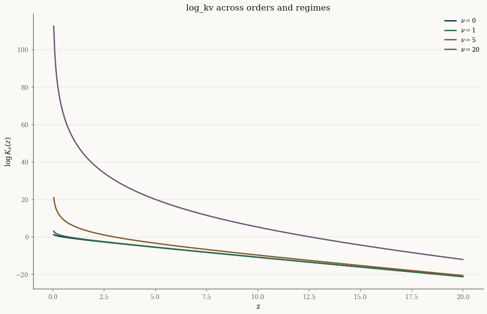

Bessel functions and log_kv#
The densities of the GIG and Generalized Hyperbolic distributions are written
in terms of the modified Bessel function of the second kind, \(K_\nu(z)\).
Evaluating it naively overflows and underflows badly, and the standard library
versions are neither JIT-able nor differentiable. normix provides log_kv, a
log-space, four-regime, autodiff-friendly implementation:
import jax
jax.config.update("jax_enable_x64", True)
import jax.numpy as jnp
import numpy as np
from normix import log_kv
from normix.utils.plotting import set_theme
set_theme()
np.set_printoptions(precision=6, suppress=False)
Two backends, one function#
log_kv has a JIT-able JAX backend (the default) and a numpy/scipy CPU
backend. Both agree, and both match scipy.special.kve (the
exponentially-scaled Bessel function, \(K_\nu(z)\,e^{z}\)):
from scipy.special import kve
v, z = 1.7, 4.0
jax_val = float(log_kv(v, z)) # JAX backend
cpu_val = float(log_kv(v, z, backend="cpu")) # numpy/scipy backend
ref = float(np.log(kve(v, z)) - z) # log K_v = log kve - z
print(f"log_kv (jax) = {jax_val:.12f}")
print(f"log_kv (cpu) = {cpu_val:.12f}")
print(f"scipy ref = {ref:.12f}")
log_kv (jax) = -4.173389418837
log_kv (cpu) = -4.173389418837
scipy ref = -4.173389418837
Symmetry and vectorization#
\(K_\nu = K_{-\nu}\), and log_kv broadcasts over both arguments like any JAX
ufunc, so you can vmap or evaluate on grids directly:
print("K_v == K_-v :", bool(jnp.allclose(log_kv(0.5, 2.0), log_kv(-0.5, 2.0))))
vs = jnp.array([0.0, 0.5, 1.0, 2.0])
zs = jnp.linspace(0.5, 5.0, 4)
grid = log_kv(vs[:, None], zs[None, :]) # (4, 4) via broadcasting
print("grid shape:", grid.shape)
K_v == K_-v : True
grid shape: (4, 4)
Numerical stability in the tails#
For large \(z\), \(K_\nu(z)\) decays like \(e^{-z}\) and underflows to exactly zero in
double precision — so log(scipy.special.kv(...)) returns \(-\infty\). Because
log_kv works in log space throughout, it stays finite and accurate:
from scipy.special import kv
for z_big in [50.0, 200.0, 700.0]:
with np.errstate(divide="ignore"):
naive = np.log(kv(0.5, z_big)) # underflows to -inf for large z
stable = float(log_kv(0.5, z_big))
print(f"z = {z_big:6.1f} log(kv) = {naive:>10} log_kv = {stable:.4f}")
z = 50.0 log(kv) = -51.73022015006934 log_kv = -51.7302
z = 200.0 log(kv) = -202.4233673306293 log_kv = -202.4234
z = 700.0 log(kv) = -inf log_kv = -703.0497
The four internal regimes — Hankel asymptotic (\(z\) large), Olver uniform expansion (\(|\nu|\) large), small-\(z\) leading term, and Gauss–Legendre quadrature elsewhere — are selected automatically; you never choose one by hand.
import matplotlib.pyplot as plt
zgrid = jnp.linspace(0.05, 20.0, 400)
fig, ax = plt.subplots()
for nu in [0.0, 1.0, 5.0, 20.0]:
ax.plot(np.asarray(zgrid), np.asarray(log_kv(nu, zgrid)), label=f"$\\nu={nu:g}$")
ax.set_xlabel("z"); ax.set_ylabel(r"$\log K_\nu(z)$")
ax.set_title("log_kv across orders and regimes")
ax.legend()
plt.show()

Exact derivatives#
log_kv carries a @jax.custom_jvp, so it is differentiable. The derivative in
\(z\) uses the exact recurrence \(K_\nu'(z) = -\tfrac12\big(K_{\nu-1}(z) +
K_{\nu+1}(z)\big)\), which we can verify against autodiff:
v0, z0 = 1.3, 2.5
ad = float(jax.grad(lambda z: log_kv(v0, z))(jnp.array(z0)))
# d/dz log K_v = K_v'/K_v = -(K_{v-1} + K_{v+1}) / (2 K_v)
recur = -0.5 * (
float(jnp.exp(log_kv(v0 - 1, z0) - log_kv(v0, z0)))
+ float(jnp.exp(log_kv(v0 + 1, z0) - log_kv(v0, z0)))
)
print(f"autodiff d/dz log_kv = {ad:.10f}")
print(f"recurrence d/dz log_kv = {recur:.10f}")
autodiff d/dz log_kv = -1.2830630981
recurrence d/dz log_kv = -1.2830630981
The derivative in the order \(\nu\) (needed for the GIG log-partition gradient) is
a finite difference on log_kv itself, and is available through the same
jax.grad:
dv = float(jax.grad(lambda v: log_kv(v, z0))(jnp.array(v0)))
print(f"d/dv log_kv at (v={v0}, z={z0}) = {dv:.6f}")
d/dv log_kv at (v=1.3, z=2.5) = 0.434939
Which backend should I use?#
backend="jax"(default) — use inside anything that is JIT-compiled, differentiated withjax.grad, or vectorized withjax.vmap, and on GPU. This is what distributionlog_probmethods call.backend="cpu"— routes throughscipy.special.kve. It is faster for large batches on CPU and is the path the EM E-step takes (e_step_backend="cpu"), where Bessel evaluation dominates the runtime.
The two are numerically interchangeable; the choice is purely about performance and the surrounding execution context.
Takeaways#
log_kv(v, z)returns \(\log K_\nu(z)\) in log space, stable across the full range of arguments.It is symmetric in \(\nu\), broadcasts/
vmaps, and is differentiable in both arguments via@jax.custom_jvp.Pick
backend="jax"for JIT/grad/vmap/GPU;backend="cpu"for the scipy-accelerated EM hot loop.
Next: Random sampling uses these densities to draw and validate samples from every distribution.